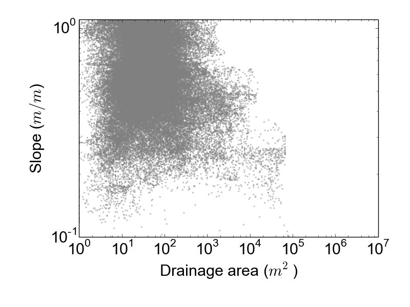

## Lasers, Landslides ## <font color="yellow"> and Bendy Bananas?!</font> <!-- .element: class="fragment" data-fragment-index="1" --> <br><br> Stuart Grieve, TC Hales, Simon Mudd, Fiona Clubb and Robert Parker
### Hurricanes Frances and Ivan <div> <div id="rightcolumn_eq">  </div> <div id="leftcolumn_eq">  </div> </div>
### Peeks Creek (2004)  <!-- .element width="100%" class="plain"-->
### Peeks Creek (2004)  <!-- .element width="70%" -->
### Peeks Creek (2004)  <!-- .element width="70%" -->
### Peeks Creek (2004)  <!-- .element width="70%" -->
### Far from a one-off <iframe src="https://www.youtube.com/embed/YONqInZmCqE?rel=0" data-autoplay class="stretch"></iframe>
## We need to understand: - Dynamics of hillslope sediment transport - Where these landslides occur - What triggers landslides - How we can predict them
### Colluvial hollows - In upland, humid landscapes we know that the majority of landslides initiate in **colluvial hollows** - But these features are difficult to map
### Theory  <!-- .element width="100%" -->
### Theory <!-- 10.1038/nature08174 --> <video width="700" controls="controls"> <source src="img/perron.mp4" type="video/mp4"> </video> - Theory predicts uniform morphology
### Reality  <!-- .element width="70%" -->
### Colluvial hollows No systematic study of more than a handful  <!-- .element width="50%" -->
## Two Questions: ### 1. Can we identify hollows from topographic data? <!-- .element: class="fragment" data-fragment-index="1" --> <br><br> ### 2. How accurate are our models? <!-- .element: class="fragment" data-fragment-index="2" -->
### Coweeta, NC  <!-- .element width="80%" -->
### Coweeta, NC - Long-Term Ecological Research site covering $50~km^2$ - Daily rain gauge data going back to the 1930s - Persistent soil mantle through much of the Quaternary - Type location for colluvial hollows - High resolution LiDAR data available
### Digital deforestation  <!-- .element width="60%" -->
### Digital deforestation  <!-- .element width="60%" -->
### Extracting hollows from topography <div> <div id="rightcolumn">  <!--.element class="plain"--> </div> <div id="leftcolumn"> <br> <ol> <li>Digitally remove forests</li> <br> <li>Identify channel initiation point</li> <br> <li>Identify upstream contributing area</li> </ol> </div> </div>
 <!-- .element width="100%" -->
Slope-area plots
Slope-area plots
Slope-area plots
Slope-area plots
Slope-area plots
Slope-area plots
Slope-area plots
Slope-area plots

Slope-area plots
Slope-area plots
Slope-area plots
### $\chi$-analysis A coordinate transformation which allows us to represent river long profiles as stright lines, normalising by drainage area  <!-- .element width="80%" class="plain" -->
### $\chi$-analysis  <!-- .element width="75%" -->
### Extracting hollows  <!-- .element width="90%" -->
### Extracting hollows  <!-- .element width="64%" -->
### Measuring hollows  <!-- .element width="77%" -->
### How can we compare shapes quantitatively?
### The shapes of things are very important to some people <iframe src="https://www.youtube.com/embed/MrGMTdsj_tk?rel=0" data-autoplay class="stretch"></iframe>
### The shapes of things are very important to some people  <!-- .element width="80%" -->
 <!-- .element width="80%" -->
### But how does the EU measure our fruit?  <!-- .element width="40%" -->
### But how does the EU measure our fruit?  <!-- .element width="80%" -->
### But how does the EU measure our fruit?  <!-- .element width="50%" -->
### But how does the EU measure our fruit?  <!-- .element width="60%" -->
### Elliptical Fourier Analysis <div> <div id="rightcolumn">  </div> <div id="leftcolumn"> <ul> <li>Decompose a polygon as a series of ellipses (harmonics)</li> <li>Shapes are normalised with respect to area, rotation and point spacing</li> <li>Allows quantitative comparisons of hollows from across a landscape</li> </ul> </div> </div>
Elliptical Fourier Analysis
### Elliptical Fourier Analysis  <!-- .element width="58%" -->
### Elliptical Fourier Analysis  <!-- .element width="100%" -->
### Our data shows that the theory is wrong!  <!-- .element: style="float: right; width: 45%" -->  <!-- .element: style="width: 45%" -->
### The theory is wrong? Hollows are transitional landforms between hillslopes and channels: #### Channel Erosion: $E = K_{f}A^{m}S^{n}$ #### Hillslope Erosion: $E = K_{h}S\frac{\rho_s}{\rho_r}$ In hollows, these two forces should be approximately equal, yielding uniform hollows
### The theory is wrong? What processes are missing from our understanding? - Subsurface morphology - The role of biota, especially vegetation - Stochastic landsliding <!-- .element: class="fragment highlight-red" data-fragment-index="1" -->
## Models of slope stability make implicit or explicit assumptions about the uniformity of hollows
### Modelling hollow soil depth <div> <div id="leftcolumn">  </div> <div id="rightcolumn"> The limiting factor on landslide hazard in hollows is the rate of soil production, not the intensity of storms! </div> </div>
### Future steps Introduce more complex hydrology and more spatial variability to model hollows...  <!-- .element width="100%" -->
## Summary - Understanding small scale hillslope morphology is vital to understanding landsliding - The next generation of landslide models need to consider source area morphology - I wasn't wasting my time reading about how to measure the shape of fruit... <!-- .element: class="fragment" data-fragment-index="1" -->
### Thank You! <div>  <!-- .element width="80%" -->